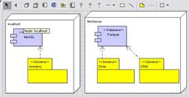
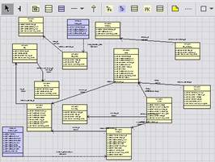

Welcome to the ArgoUML Database Modeling project. DB-UML is an open source modeling tool for creating, updating and visualizing relational database schemas. A UML profile is used to represent database elements. Using the tool you can create a new model of database elements, import relational catalog meta-data into a model and generate SQL create statements from a model.
The tool is designed as an ArgoUML module. DB-UML extends ArgoUML allowing you to create two new kinds of diagrams; database deployment diagrams and schema diagrams.
Database deployment diagrams show the relationships between physical nodes and databases. They can also show the schemas defined in a database.

Database schema diagrams are similar to class diagrams. They show the structure and relationships of schemas, tables, views and other database entities.

The User Guide has directions for installing and setting up DB-UML. You can download the module from this site to install with ArgoUML. For a complete package of this module with ArgoUML, visit the DB-UML SourceForge site .
There are number of objectives for this project:
Develop a Useful UML Profile for Database Modeling. Currently there is no standard UML profile for database modeling. An initial profile is proposed in this project in the DB-UML Profile Through the collaboration of an open source community this profile will further evolve into a generally useful profile for modeling databases.
Support Modeling for Business Intelligence. DB-UML will evolve into a more general tool (or set of tools) supporting the data modeling needs of business intelligence. Profiles specific to data warehouse schemas would be useful as well as transformations from operational schemas. A profile could also be developed for OLAP schemas.
The DB-UML RoadMap details the projects and enhancements we are currently planning.